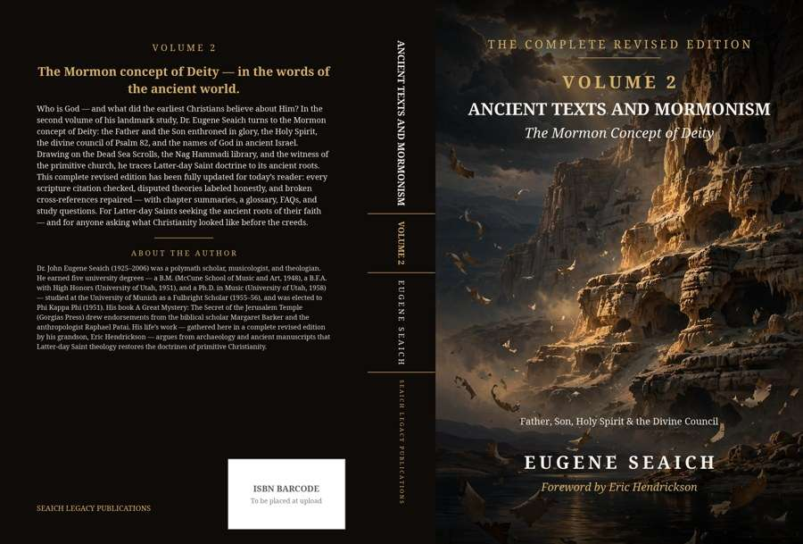

Quick answer
The standard Hebrew Masoretic Text of Deuteronomy 32:8 says God divided the nations “according to the number of the sons of Israel.” A Dead Sea Scroll (4QDeutʲ) reads “sons of God,” and most Septuagint manuscripts read “angels of God.” Many textual scholars consider “sons of God” the older reading, which points to a divine council in early Israelite belief.
Claim Level 3 · Historical ReconstructionThe Verse
Deuteronomy 32 is the “Song of Moses,” one of the oldest poems in the Hebrew Bible. Verses 8–9 describe how the nations of the world received their places:
“When the Most High divided to the nations their inheritance, when he separated the sons of Adam, he set the bounds of the people according to the number of the children of Israel. For the LORD’s portion is his people; Jacob is the lot of his inheritance.”Deuteronomy 32:8–9, King James Version (following the Masoretic Text)
Under the Masoretic reading, the verse is puzzling. Israel did not yet exist when the nations were divided, so why would their borders be set by the number of Israel’s sons?
The Dead Sea Scrolls’ “sons of God” reading changed the discussion.
The Manuscript Evidence
| Witness | Date | Reading | English |
|---|---|---|---|
| Masoretic Text (standard Hebrew Bible) | Medieval manuscripts, e.g. Leningrad Codex, c. 1008 CE | בְּנֵי יִשְׂרָאֵל bĕnê yiśrāʾēl | “sons of Israel” |
| Dead Sea Scrolls: 4QDeutʲ (4Q37) | 1st century BCE | בני אלוהים bny ʾlwhym | “sons of God” |
| Septuagint (Greek), most manuscripts | Translated c. 3rd–2nd century BCE | angelōn theou | “angels of God” |
| Septuagint, some manuscripts | Same tradition | huiōn theou | “sons of God” |
The Dead Sea Scroll is more than a thousand years older than the oldest complete Masoretic manuscripts. The Greek “angels of God” also makes sense as a translator’s interpretation of a Hebrew text that read “sons of God,” because Greek-speaking Jews often understood the “sons of God” as angels. Because two independent lines of evidence point the same way, many textual critics now conclude that “sons of God” came first. Claim Level 3
How Bible Translations Differ
| Translation | Deuteronomy 32:8 reads… | Follows |
|---|---|---|
| King James Version | “the children of Israel” | Masoretic Text |
| New International Version | “the sons of Israel” | Masoretic Text |
| English Standard Version | “the sons of God” | Dead Sea Scrolls / Septuagint |
| New Revised Standard Version | “the gods” | Dead Sea Scrolls / Septuagint |
| New Living Translation | “his heavenly court” | Dead Sea Scrolls / Septuagint |
| NET Bible | “the heavenly assembly” | Dead Sea Scrolls / Septuagint |
Several major modern translations, Evangelical and mainline alike, have moved away from the Masoretic reading. The “sons of God” reading is no longer a fringe position.
Why the Reading May Have Changed
If “sons of God” was original, why do later Hebrew manuscripts say “sons of Israel”? Several textual scholars, including Emanuel Tov, consider the substitution a likely example of a deliberate theological change. A scribe uneasy with a verse that seemed to assign the nations to other divine beings may have replaced “God” with “Israel.” Claim Level 3
The “sons of God” reading also fits the verse’s logic better. Genesis 10 lists seventy nations. Ancient Canaanite texts from Ugarit speak of the “seventy sons” of the high god El, who presided over a divine assembly. Deuteronomy 32:8–9 then reads as a picture of the Most High dividing the nations among the members of his council, while the LORD takes Israel as his own portion. Claim Level 3
The Divine Council Elsewhere in the Bible
Deuteronomy 32:8 is not an isolated verse. The Hebrew Bible repeatedly pictures God presiding over a heavenly assembly:
- Psalm 82:1: “God standeth in the congregation of the mighty; he judgeth among the gods.” Read the Psalm 82 study →
- Job 1:6 and 38:7: the “sons of God” present themselves before the LORD and shout for joy at creation.
- 1 Kings 22:19–22: the prophet Micaiah sees “all the host of heaven” standing beside the LORD’s throne in council.
- Deuteronomy 4:19–20: the heavenly host is “allotted” to other nations, while Israel belongs to the LORD.
- Daniel 10:13, 20: heavenly “princes” oversee Persia and Greece.
- Sirach 17:17 and Jubilees 15:31–32: later Jewish texts that repeat the idea of a ruler assigned over each nation.
What Eugene Seaich Concluded
Eugene Seaich (Ph.D., University of Utah; Fulbright scholar; author of A Great Mystery, Gorgias Press) treated Deuteronomy 32:8 as a key to recovering Israel’s earliest theology. In Volume 2 of Ancient Texts and Mormonism, he argues:
- “Sons of God” is the original reading, and the Masoretic wording is a later revision. Claim Level 3
- The change obscured a heavenly hierarchy in which a supreme Father presided over a council of divine sons. Claim Level 2
- The ancient divine council resembles the Restoration’s teaching of a Council in Heaven and a plurality of divine beings. Claim Level 4
Latter-day Saint doctrine identifies Elohim as God the Father and Jehovah as the premortal Jesus Christ. Claim Level 1 Seaich saw a parallel in verses 8–9, where the “Most High” (Elyon) divides the nations and “the LORD” (Yahweh) receives Israel. Scholars disagree about whether Deuteronomy 32:8–9 describes two figures or one. Seaich’s reading is an interpretation, not a settled conclusion. Claim Level 2
What Skeptics Say
A fair reading has to include the counterarguments:
- The Masoretic reading has its own logic. Seventy descendants of Jacob went down to Egypt (Genesis 46:27; Exodus 1:5), matching the seventy nations of Genesis 10. Ancient rabbis read Deuteronomy 32:8 as matching Jacob’s seventy descendants with the seventy nations.
- A council is not polytheism. Many scholars, including Michael Heiser, accept “sons of God” as original but argue that the council members are created beings, far below Israel’s God. On that view, the verse supports angels, not multiple gods to be worshipped.
- Elyon and Yahweh are probably one figure. Many interpreters read “Most High” and “the LORD” as two names for the same God. Others, including some historians of early Israelite religion, see two figures. The text alone does not settle the question.
- Resemblance does not equal transmission. A parallel between ancient texts and Restoration teaching does not prove a historical connection. “Resemblance does not equal transmission” is the governing rule of the entire series.

Go deeper
The Mormon Concept of Deity — Father, Son, Holy Spirit, and the Divine Council
Volume 2 of Ancient Texts and Mormonism follows the divine council from Ugarit through the Dead Sea Scrolls to the Restoration, in 628 pages with every claim labeled by evidence.
About the bookQuestions
What is the original reading of Deuteronomy 32:8?
The Masoretic Text reads “sons of Israel,” but the Dead Sea Scroll 4QDeutʲ reads “sons of God,” and most Septuagint manuscripts read “angels of God.” Many textual scholars consider “sons of God” the older reading.
Why do Bible translations of Deuteronomy 32:8 differ?
Translations follow different manuscripts. The KJV and NIV follow the Masoretic Text (“sons of Israel”). The ESV reads “sons of God,” the NRSV “the gods,” and the NLT “his heavenly court,” following the Dead Sea Scrolls and Septuagint evidence.
Does Deuteronomy 32:8 prove ancient Israel was polytheistic?
No. Deuteronomy 32:8 shows that early Israelite texts pictured a divine council of heavenly beings under the Most High. Scholars disagree about how to describe that belief, and whether “Most High” and “the LORD” in verses 8–9 are one figure or two remains debated.
Related Questions
Further Reading
- Tov, Emanuel. Textual Criticism of the Hebrew Bible. 3rd ed. Fortress Press, 2012.
- Heiser, Michael S. “Deuteronomy 32:8 and the Sons of God.” Bibliotheca Sacra 158 (2001): 52–74.
- Heiser, Michael S. The Unseen Realm. Lexham Press, 2015.
- Smith, Mark S. The Origins of Biblical Monotheism. Oxford University Press, 2001.
- Tigay, Jeffrey H. Deuteronomy. JPS Torah Commentary. Jewish Publication Society, 1996.
- Seaich, Eugene. Ancient Texts and Mormonism, Vol. 2: The Mormon Concept of Deity — Father, Son, Holy Spirit, and the Divine Council. Seaich Legacy Publications, 2026.